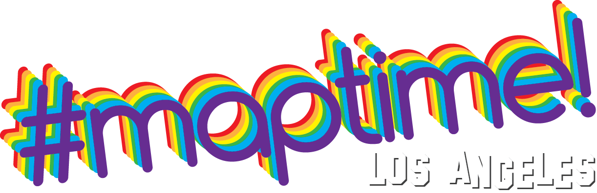
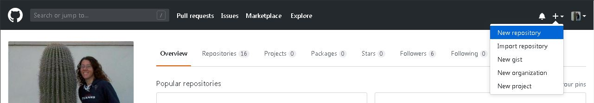
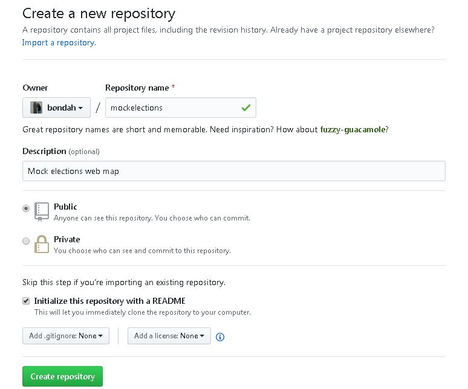

MaptimeLA presents:
Let's make our own map website!

Thank you to Arup for hosting!!
GitHub is online version control.

var map = L.map('map', {
zoomControl:true, maxZoom:28, minZoom:1
}).fitBounds([[33.70892097371183,-119.13326083195065],[34.679639066946486,-117.07869093341363]]);
Login to your GitHub account and plus sign (+) in the upper right.

Give your repository a name (no spaces) and a description.

Map mock election sites in QGIS
Make a webmap using QGIS2Web
Upload your map to GitHub
Use GitHub Pages to create a web page
Add your map to your GitHub pages site